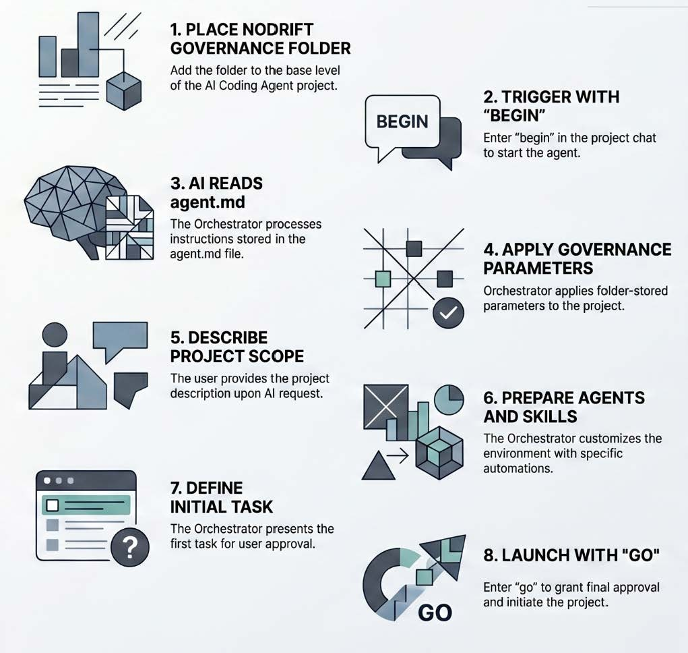

Generated Output
Drafts, code, summaries, searches, and suggestions begin as output. They become useful when the work session checks their meaning for the actual project instead of treating the first answer as accepted truth.
NoDrift helps the work session keep generated output separate from verified project truth. A plausible answer is not yet a project fact. A useful suggestion is not yet an approved decision.

Drafts, code, summaries, searches, and suggestions begin as output. They become useful when the work session checks their meaning for the actual project instead of treating the first answer as accepted truth.
Facts, decisions, scope, permissions, and handoffs become project truth after review. The next session should not restart from memory or from whatever the chat happened to say last.
The model may be able to edit, publish, delete, or connect an outside service. NoDrift keeps the difference between ability and approval in view and pauses unclear actions until permission is explicit.
A suggestion stays separate from an approved decision until the project owner actually accepts it.
Source status and evidence decide whether a claim can become a project fact.
The useful result remains visible enough for later work to continue without guessing, especially after pauses, compaction, or a new chat.